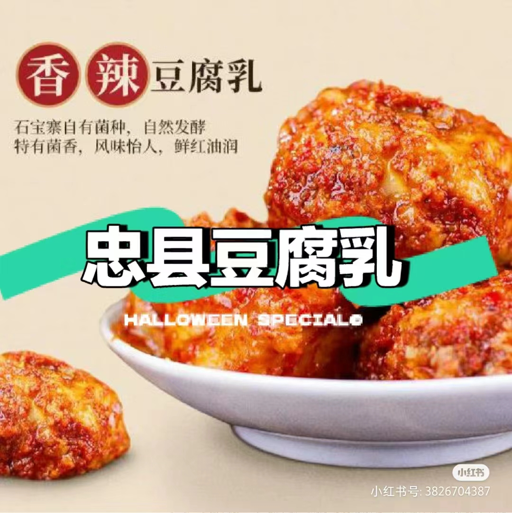
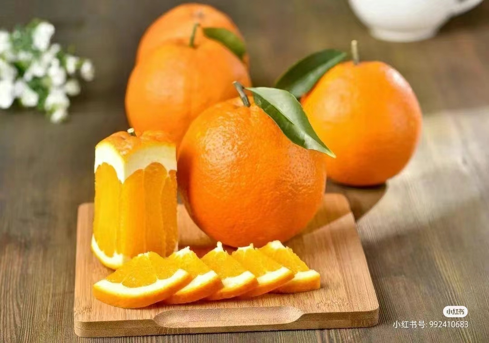
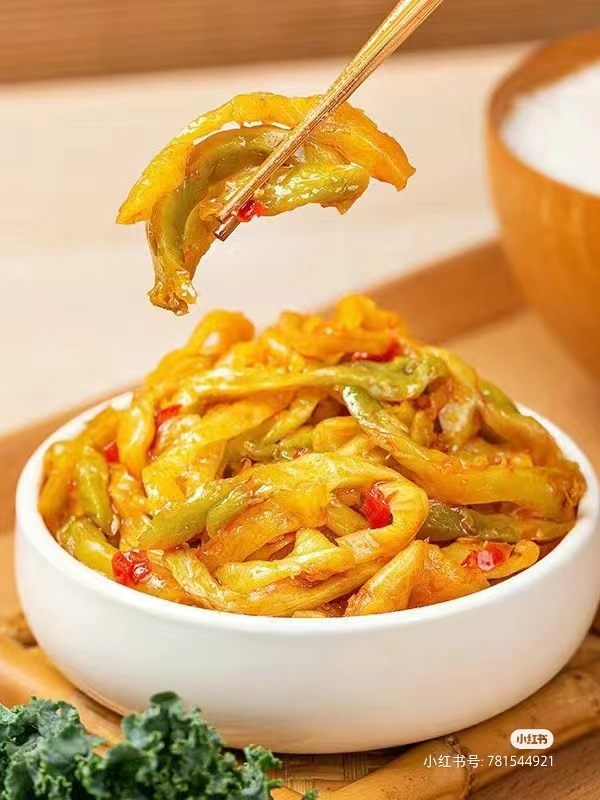
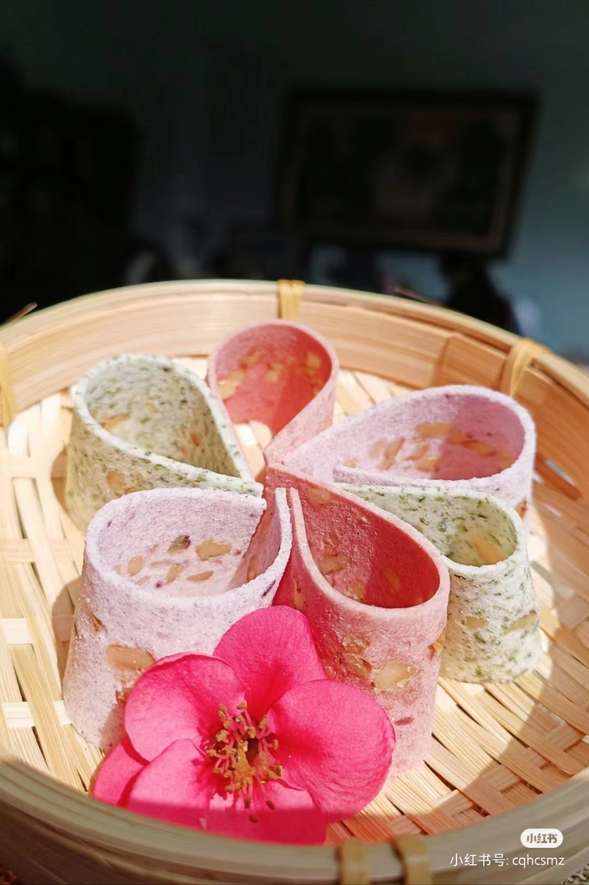
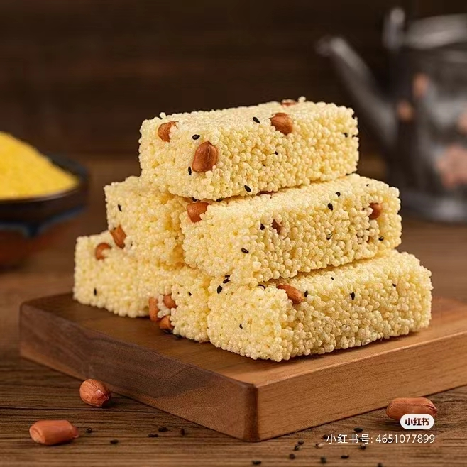

重庆特产
重庆特色介绍

忠县豆腐乳
其历史悠久，始于唐代，盛于清朝，千余年来一直旺盛不衰。忠县豆腐乳的制作工艺独特，其所用菌种系以清雍正年间启用至今的霉房分离而得，其酶系多样性和分解力为中国独有。忠县豆腐乳有多种口味，如红油、白方、香辣、白菜等，每一种口味都独具特色。近年来，忠县豆腐乳还推出了针对特殊人群（如孕妇、儿童）的专用产品，不含任何添加剂，内含多种对孕妇、儿童有益的微量元素。

奉节脐橙
这种脐橙的种植历史悠久，始于汉代，产区位于三峡库区，享有“无台风、无冻害、无检疫性病虫害”的三大生态优势。奉节脐橙的果皮中厚且脆，肉质细嫩化渣，无核少络，酸甜适度，汁多爽口，余味清香。其营养价值高，富含维生素C和纤维素，有助于提高免疫力、促进肠胃蠕动。奉节脐橙的种植不仅带动了当地农村经济的发展，还因其品质优良而出口到国内外市场。

涪陵榨菜
它选用涪陵特有的青菜头为原料，经过精心的腌制和发酵，形成了独特的口感和风味。这种青菜头呈近圆形、扁圆球形或仿锤形，表皮青绿，肉质白而肥厚，质地嫩脆。涪陵榨菜的制作工艺独特，需要经过剥皮、切片、腌制、发酵等多个步骤，每一步都需要精心操作，才能保证榨菜的口感和风味。在腌制过程中，涪陵榨菜会吸收大量的调料汁液，使其味道更加鲜美。而在发酵过程中，榨菜会发生微妙的变化，使其口感更加鲜嫩。

合川桃片
这种小吃采用上等糯米、核桃仁、川白糖、蜜玫瑰等原料，经过精制加工而成，具有粉质细润、绵软、片薄、色洁白、味香甜的特点，尤其是桃仁和玫瑰香味的突出。合川桃片不仅是一种美食，还承载着深厚的文化意义，见证了国家的改革开放和中国特色社会主义新征程，成为合川人的骄傲与自豪。是重庆市级非物质文化遗产。在合川桃片产业集群中，有多家老字号品牌和驰名商标，如“同德福”、“三民斋”、“川洲牌”等。

江津米花糖
它以优质糯米、核桃仁、花生仁、芝麻、白糖、动植物油、饴糖、玫瑰糖等为源料，经过10余道工序精工制成。江津米花糖的特点是洁白晶莹、香甜酥脆、爽口化渣、甜而不腻，营养丰富，具有滋阴补肾、开胃健脾等功效。江津米花糖的历史悠久，自1910年创制以来，其产品不仅在国内外享有盛誉，还远销美国、新西兰等国家和地区，深受各地消费者的喜爱。
让我们一起探索山城重庆吧!